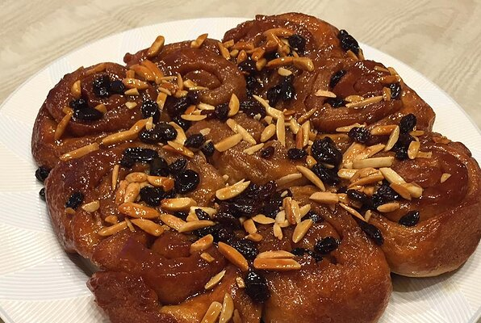

Home
Mom-Mom's Sticky Buns

Famous in my family and always looked forward to when being prepared by my grandmother.
My father demands that it is made for his birthday breakfast each year. Best enjoyed warm out of the oven.
Things you will need:
- 2 (.25 ounce) packages quick-rising yeast (such as Fleischmann's RapidRise®)
- ½ cup lukewarm water
- 4 ½ cups sifted all-purpose flour
- 2 eggs, beaten
- ½ cup warm milk
- ½ cup butter, melted
- 1 teaspoon salt
Step by step
- Dissolve yeast in lukewarm water in a large bowl. Set aside for 5 minutes. Stir flour, eggs, warm milk, 1/2 cup white sugar, 1/2 cup melted butter, and salt into the yeast and water until the mixture is a moist and sticky dough.
- Put dough in a greased bowl and cover with a wet towel. Set aside in a warm place until dough doubles in size and holes poked into dough with a finger stay indented, about 1 1/2 to 2 1/2 hours.
- Stir brown sugar, 1/2 cup butter, honey, and corn syrup together in a saucepan over medium heat; cook, stirring occasionally, until the sugar dissolves. Pour the topping mixture into the bottom of 2 9x13-inch non-stick baking dishes. Sprinkle 1 cup raisins and walnuts evenly onto the topping mixture.
- Punch down dough and roll into a rectangle shape 1/4 to 1/2-inch thick.